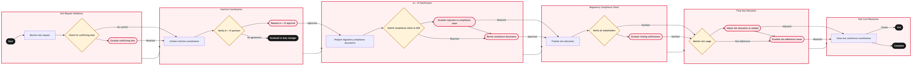

Updated 2026-08-20
IATA Slot Conference Coordination
Process flow
Click to zoom

Process steps
▼
Phase 1 — Slot Request Validation
3 steps
| Step | Activity | Role | System | Input | Output | KPI | Dec | Exc | Pain point |
|---|---|---|---|---|---|---|---|---|---|
| 1.1 | Receive slot request | YYZ Operations Control Duty Manager | Lufthansa Systems NetLineB | Slot request form | Validated slot request | Response time within 2 hours | N | N | Delays in receiving requests from ground staff. |
| 1.2 | Check for conflicting slots | YYZ Operations Control Duty Manager | Lufthansa Systems NetLineB | Validated slot request | Conflicting slot report | Conflict detection rate 95% | Y | N | Overlooked conflicts leading to operational disruptions. |
| 1.3 | Escalate conflicting slots | YYZ Operations Control Duty Manager | Lufthansa Systems NetLineB | Conflicting slot report | Escalation ticket | Escalation response time within 1 hour | N | Y | Manual intervention required for complex conflicts. |
▼
Phase 2 — Interline Coordination
3 steps
| Step | Activity | Role | System | Input | Output | KPI | Dec | Exc | Pain point |
|---|---|---|---|---|---|---|---|---|---|
| 2.1 | Initiate interline coordination | Star Alliance Interline Agent | Star Alliance InterlineA | Validated slot request | Interline communication log | Communication response rate 90% | N | N | Delays in receiving responses from partner airlines. |
| 2.2 | Notify A++ JV partners | A++ Atlantic Joint Venture Coordinator | A++ Atlantic Joint VentureA | Validated slot request | Confirmation email | Notification response time within 3 hours | Y | N | Non-compliance with joint venture protocols. |
| 2.3 | Request A++ JV approval | A++ Atlantic Joint Venture Coordinator | A++ Atlantic Joint VentureA | Interline communication log | JV approval document | Approval time within 4 hours | N | Y | Complex negotiations for slot allocation. |
▼
Phase 3 — A++ JV Notification
4 steps
| Step | Activity | Role | System | Input | Output | KPI | Dec | Exc | Pain point |
|---|---|---|---|---|---|---|---|---|---|
| 3.1 | Prepare regulatory compliance documents | Regulatory Compliance Officer | Lufthansa Systems NetLine/PlanU | JV approval document | Compliance checklist | Document preparation time within 2 hours | N | N | Misinterpretation of regulatory requirements. |
| 3.2 | Submit compliance check to IATA | Regulatory Compliance Officer | Lufthansa Systems NetLine/PlanU | Compliance checklist | IATA submission confirmation | Submission time within 1 hour | Y | N | Rejection due to non-compliance. |
| 3.3 | Escalate rejection to compliance team | Regulatory Compliance Officer | Lufthansa Systems NetLine/PlanU | IATA submission confirmation | Rejection resolution ticket | Resolution time within 2 hours | N | Y | Complex regulatory issues require expert intervention. |
| 3.4 | Revise compliance documents | Regulatory Compliance Officer | Lufthansa Systems NetLine/PlanU | Rejection resolution ticket | Revised compliance checklist | Revision time within 2 hours | N | Y | Multiple revisions due to regulatory changes. |
▼
Phase 4 — Regulatory Compliance Check
3 steps
| Step | Activity | Role | System | Input | Output | KPI | Dec | Exc | Pain point |
|---|---|---|---|---|---|---|---|---|---|
| 4.1 | Finalize slot allocation | YYZ Operations Control Duty Manager | Lufthansa Systems NetLine/PlanU | Revised compliance checklist | Slot allocation document | Allocation time within 1 hour | N | N | Delays in finalizing allocations due to system limitations. |
| 4.2 | Notify all stakeholders | YYZ Operations Control Duty Manager | Lufthansa Systems NetLine/PlanU | Slot allocation document | Stakeholder notification log | Notification rate 100% | Y | N | Missing notifications leading to operational confusion. |
| 4.3 | Escalate missing notifications | YYZ Operations Control Duty Manager | Lufthansa Systems NetLine/PlanU | Slot allocation document | Notification escalation ticket | Escalation response time within 1 hour | N | Y | Manual follow-ups required for missed notifications. |
▼
Phase 5 — Final Slot Allocation
3 steps
| Step | Activity | Role | System | Input | Output | KPI | Dec | Exc | Pain point |
|---|---|---|---|---|---|---|---|---|---|
| 5.1 | Monitor slot usage | YYZ Operations Control Duty Manager | Lufthansa Systems NetLine/PlanU | Slot allocation document | Usage report | Adherence rate 90% | Y | N | Non-adherence to allocated slots leading to delays. |
| 5.2 | Adjust slot allocation as needed | YYZ Operations Control Duty Manager | Lufthansa Systems NetLine/PlanU | Usage report | Adjusted slot allocation document | Adjustment time within 1 hour | N | Y | Complex adjustments due to unforeseen circumstances. |
| 5.3 | Escalate non-adherence issues | YYZ Operations Control Duty Manager | Lufthansa Systems NetLine/PlanU | Usage report | Non-adherence escalation ticket | Escalation response time within 2 hours | N | Y | Manual intervention required for complex non-adherence issues. |
▼
Phase 6 — Post-Conf Resolution
1 steps
| Step | Activity | Role | System | Input | Output | KPI | Dec | Exc | Pain point |
|---|---|---|---|---|---|---|---|---|---|
| 6.1 | Close slot conference coordination | YYZ Operations Control Duty Manager | Lufthansa Systems NetLine/PlanU | Final slot allocation document | Completion report | Closure time within 30 minutes | N | N | Delays in closing the process leading to missed opportunities. |
Swim lanes
YYZ Operations Control Duty Manager1.1 1.2 1.3 4.1 4.2 4.3 5.1 5.2 5.3 6.1
Star Alliance Interline Agent2.1
A++ Atlantic Joint Venture Coordinator2.2 2.3
Regulatory Compliance Officer3.1 3.2 3.3 3.4
Systems touched
Lufthansa Systems NetLineBStar Alliance InterlineAA++ Atlantic Joint VentureALufthansa Systems NetLine/PlanU
Key performance indicators
- Response time within 2 hours
- Conflict detection rate 95%
- Communication response rate 90%
- Approval time within 4 hours
- Document preparation time within 2 hours
Risks and control points
- Misinterpretation of regulatory requirements leading to non-compliance.
- Complex negotiations with A++ JV partners causing delays.
- System limitations affecting the finalization of slot allocations.
- Manual follow-ups required for missed notifications.
- Non-adherence to allocated slots leading to operational disruptions.
Air Canada Process Wiki — process and systems reference compiled from public sources
for IT Application Management and User Support pre-sales discovery.
Built 2026-08-20. Every system carries an evidence tier: tier C is an industry pattern and tier U is an open
question, and neither should be asserted as fact about Air Canada without confirmation in discovery.
Not affiliated with or endorsed by Air Canada. Air Canada, Aeroplan and Altitude are trademarks of Air Canada.